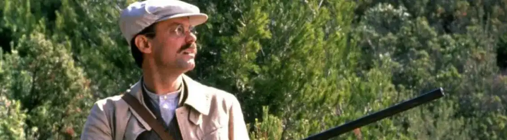
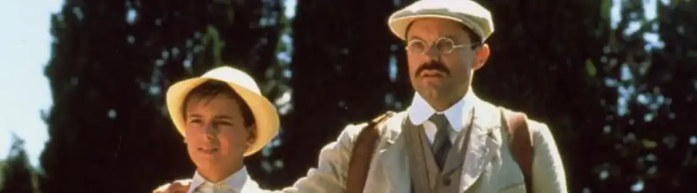
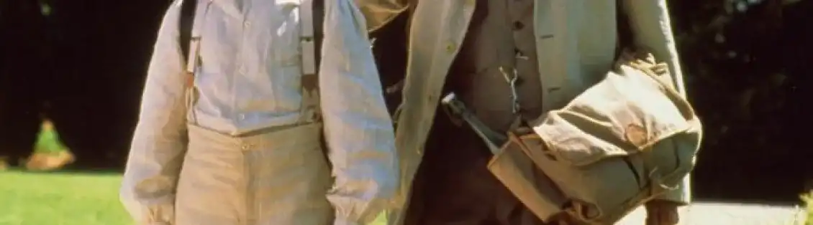
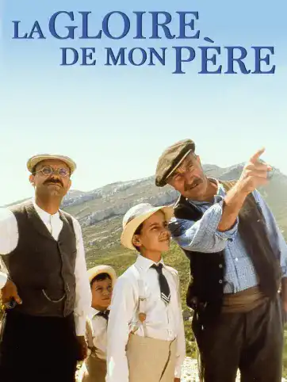

MASSILIA Le Marseille d'hier
Adaptation Ciné
Le film La gloire de mon père, sortie en salle en 1990 et réalisé par Yves Robert. Est une adaptation cinématographique du célèbre livre de Marcel Pagnol. Ce film retrace ses souvenirs qu’il a vécu à Aubagne. L’histoire se déroule principalement dans la colline du Garlaban (colline sur les hauteurs de Marseille). Dans ce film, il décrit on peut voir une version de Marseille qui paraît toujours d’actualité. Les éléments paraissent toujours actuels avec des sorties au Parc Borély. Pour résumer ce film d’Yves Robert est une biographie de Marcel Pagnol vu qu’il s’agit d’une adaptation d’une autobiographie où ce-dernier par à la découverte du paysage et de la culture provençale. Dans la scène où son père, Joseph abats deux oiseaux, a eu un effet chez l’auteur. Car lorsqu’il retourne au village, ce dernier glorifie son père, et lui rends hommage en nommant son livre « la gloire de mon père ». Ce film m’a permis à l’époque de mieux comprendre l’histoire de ce livre.

En plus les scènes se déroulent dans ma région, Les bouches du Rhône. Des scènes simples avec des répliques simples. Les phrases sont peu complexes avec un accent prononcé. Marcel écrit son livre avec un vocabulaire de quand il était petit. Le metteur en scène du film a permis de reproduire cette ambiance enfantine. Regarder ce film permet d’avoir une autre approche a ce livre. Malgré l’écart temporel entre le film et maintenant (son visionnage), les événements sont toujours modernes avec des idées toujours en place.



Évocation de l'enfance heureuse de l'écrivain français Marcel Pagnol, et de ses vacances familiales à la campagne.
Voir la bande annonce
.webp)